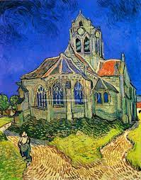
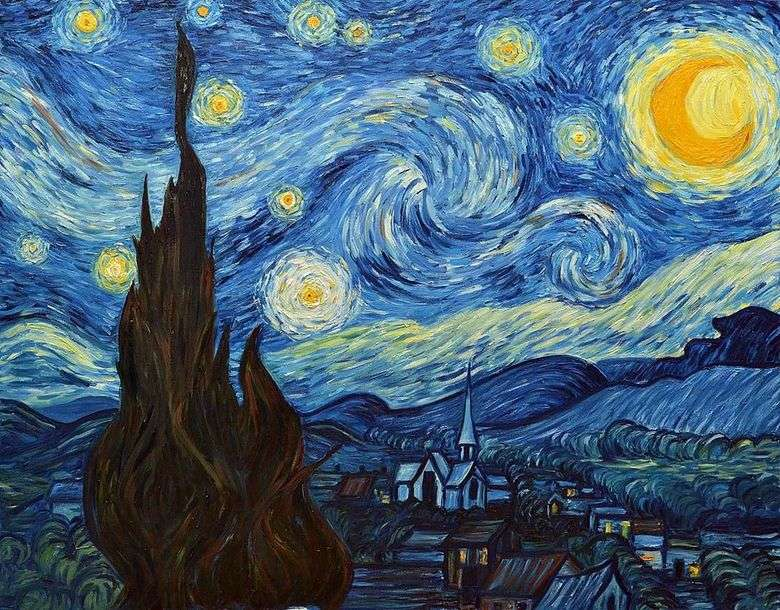

Durante el mes de marzo e inicios de abril del año 1885, el autor preparó bosquejos relativos a la obra. Esta la inició el 13 de abril del mismo para dejarla casi terminada a inicios del mes de mayo. Los cambios menores los finalizó más tarde en 1885, con pequeñas pinceladas.

Este cuadro, con otras telas como el Ayuntamiento de Auvers y numerosos cuadros de pequeñas casas con los tejados de tejas son reminiscencia de las escenas de los paisajes nórdicos de su infancia.2 Una cierta nostalgia por el norte se podía ya notar en sus últimas semanas en Saint-Rémy: en una carta de un par de semanas antes de su partida, escribe «mientras estaba enfermo hice de todas formas algunos pequeños lienzos de memoria, que verás más adelante, en recuerdo del norte.»

A raíz de la crisis sufrida el 30 de febrero de 1888 que resultó en la mutilación, Van Gogh ingresó voluntariamente en el manicomio de Saint-Paul-de-Mausole el 8 de mayo de 1889.
La noche estrellada fue pintada a mediados de junio (alrededor del 18 de junio), fecha en la que le escribió a su hermano Theo para decirle que tenía un nuevo estudio de un cielo estrellado
1853 Nació el 30 de marzo en Zundert (Países Bajos), siendo sus padres el Reverendo Theodorus van Gogh y Anna Cornelia Carpentus.
1857 Nace su hermano Theo, con quien Vincent tuvo una extensa correspondencia escrita a lo largo de su vida.
1869 Deja la escuela para comenzar su formación en el concesionario de arte Goupil & Co. (en La Haya).
1873 Es enviado a la oficina londinense de Goupil & Co. Comienza a coleccionar ilustraciones de The Graphicy de Illustrated London News de artistas como Frank Holl, Hubert von Herkomer y Luke Fildes.
1875 Es trasladado a la oficina de Goupil & Co. en París
1876 Es despedido de su trabajo en Goupil & Co. Regresa a vivir en Inglaterra, donde encuentra trabajo enseñando en Ramsgate e Isleworth.
1877 Regresa a los Países Bajos. Trabaja por poco tiempo en una librería en Dordrecht antes de mudarse a Amsterdam para comenzar sus estudios en orden de convertirse en ministro.
1878 Se traslada al distrito de Borinage (Bélgica), donde trabaja como predicador laico.
1879 Es despedido de su cargo en Borinage.
1880 Por sugerencia de su hermano Theo, decide dedicarse al arte. Hacia finales de año se traslada a Bruselas para asistir a la Académie Royale des Beaux-Arts, donde estudió dibujo en vivo, anatomía y fisonomía. Theo, que había comenzado a trabajar para Goupil, comienza a apoyarlo financieramente.
1881 Se traslada a la casa de sus padres en el pueblo de Etten (Países Bajos) durante la primavera. Continúa sus estudios como artista recopilando impresiones y reproducciones, las cuales dibujó posteriormente.
En invierno, tras discusiones polémicas con su padre, se traslada a La Haya, que para ese momento era el núcleo de la pintura holandesa. Esto también marca el fin de su fervor religioso.
1882 Recibe instrucción y ayuda de su primo político, el pintor realista holandés Anton Mauve (1838-88). Sin embargo, la relación se torna difícil muy pronto, probablemente debido en parte a que van Gogh comenzó a vivir con Clasina Maria "Sien" Hoornik, una madre abandonada de las clases bajas que trabajaba como prostituta ocasionalmente. Sien y sus hijos le sirvieron como modelos al artista durante este período.
1883 Deja a Sien y se muda a Hoogeveen en el norte de los Países Bajos. Su decisión de abandonar La Haya se debió, en parte, a su continuo deseo de ser el pintor de los campesinos y del campo. En diciembre regresa a vivir con sus padres, quienes para entonces vivían en Nuenen. Durante este período produjo algunas de sus primeras pinturas que fueron pensadas como piezas acabadas en sí mismas, en lugar de bocetos o estudios.
1885 Pinta Los comedores de patatas (Amsterdam, Museo Van Gogh), una obra que encarna sus años de dibujo y estudio de los campesinos. En noviembre de este año, el artista se trasladó a Amberes, con el fin de tener acceso a los museos y donde hubiera una academia donde poder estudiar y dibujar moldes de yeso y modelos en vivo.
1886 Se traslada a París en febrero. Comparte un apartamento con su hermano Theo, quien intentaba vender pinturas de artistas impresionistas como Claude Monet (1840-1926) y Camille Pissarro (1830-1903). van Gogh conoce a estos artistas a través de su hermano. Alrededor de este tiempo también comienza a recoger y estudiar grabados japoneses ukiyo-e en madera, los cuales influyeron notablemente en su propio trabajo.
En París, van Gogh comienza a trabajar en el estudio de Fernand Cormon (1845-1924), donde se encuentra con artistas como Émile Bernard (1868-1941) y Henri de Toulouse-Lautrec (1864-1901).
1887 Conoce y se hace amigo del pintor Paul Gauguin (1848-1903). A finales de año, van Gogh organiza una exposición de obras en el restaurante (Grand-Bouillon Restaurant du Chalet) en el distrito parisino de Montmartre. Los artistas expuestos son él mismo, Bernard, Louis Anquetin (1861-1932), y posiblemente Toulouse-Lautrec.
1888 se traslada a Arles, en el sur de Francia. En esta zona y en sus alrededores continúa pintando y dibujando, a menudo volviendo a los motivos de la vida campesina en los que había trabajado cuando vivía en los Países Bajos.
En octubre, Gauguin viene a vivir y a trabajar con van Gogh en la Casa Amarilla. Sin embargo, este acuerdo duró poco tiempo, ya que Gauguin deja Arles tras una discusión, en época de navidad. van Gogh se corta la oreja y pasa tiempo en el hospital, experimentando los primeros episodios importantes de su enfermedad mental
1889 Debido a sus graves y persistentes problemas de salud mental, se interna en el Asilo Saint-Paul de Saint-Rémy. Durante los períodos en que está lo suficientemente bien para hacerlo, continúa pintando y dibujando.
1890 Deja la clínica Saint-Rémy para ir a vivir en Auvers-sur-Oise. El 27 de julio, aparentemente se dispara en el pecho. En las primeras horas de la mañana del 29 de julio, muere. Según su hermano Theo, quien estuvo presente cuando murió, las últimas palabras de Van Gogh fueron: "La tristeza durará para siempre".